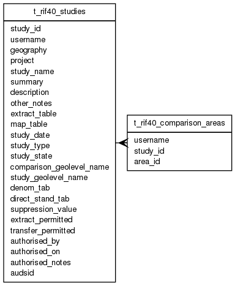

| Table: rif40.t_rif40_comparison_areas | |||
| Links comparison areas and bands for a given study. | |||
| Size: medium, Select frequency: medium, Update frequency: medium | |||
| Columns | |||
| Name | Type | Constraints | Description |
| username | VARCHAR (90) | Username | |
| study_id | INTEGER | NOT NULL | Unique study index: study_id. Created by SEQUENCE rif40_study_id_seq |
| area_id | VARCHAR (300) | NOT NULL | An area id, the value of a geolevel; i.e. the value of the column T_RIF40_GEOLEVELS.GEOLEVEL_NAME in table T_RIF40_GEOLEVELS.LOOKUP_TABLE |
| Primary key | |||
| Name | Columns | Description | |
| t_rif40_comparison_areas_pk | study_id, area_id | ||
| Foreign keys | |||
| Name | Columns | Referenced table | Description |
| t_rif40_compareas_study_id_fk | study_id | t_rif40_studies | |
| Indexes | |||
| Name | Columns | Description | |
| t_rif40_comp_areas_uname | username | ||
| Grants | |||
| Role | Actions | ||
| rif_manager | select, insert, delete, update | ||
| rif_user | select, insert, delete, update | ||
| rif40 | select, references, insert, delete, update | ||
